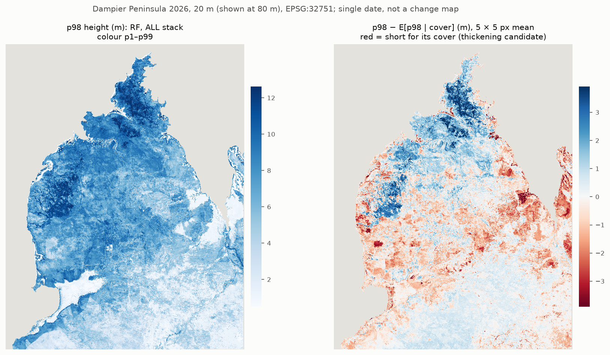

Dampier Peninsula vegetation structure, 2026
Drone LiDAR + NISAR L-band + Sentinel-1 + Sentinel-2, 20 m grid, one date (Sep–Oct 2026). Last updated 2026-11-03. Code, reports and tables open on GitHub. Map rasters: not yet available.
The product: where vegetation is tall or short for its cover

Residual = p98 − E[p98 | cover]: the 98th-percentile canopy height of a 20 m pixel, minus the height that pixels with the same canopy cover (at 1.37 m) have on average.
- Height and cover are strongly correlated (r 0.61 at the labels). The residual removes the shared part.
- What is left is a structure contrast: short and dense, against tall and open.
- Skill (K-fold, optimistic): R² 0.47 per pixel, 0.83 for a 5 × 5 px mean (100 m).
- Single date. A red area is "short for its cover now", not "cover increased". It is not a change map.
Maps (20 m, EPSG:32751, nodata −9999):
p98_resid_w5_ALL.tif (not yet available) (5 × 5 mean, use this),
p98_resid_ALL.tif (not yet available) (per px),
height_p98_ALL.tif (not yet available),
cover137_ALL.tif (not yet available),
height_mean_ALL.tif (not yet available).
Detail: p98 residual.
How we got here
LiDAR → training labels
2026 drone LiDAR at 5 Dampier sites, plus 2025 drone LiDAR at 7 Yawuru areas. 6 Yawuru areas burnt between flight and image date: we dropped them.
From the point clouds: 50 cm p98 canopy height model (CHM) and canopy cover. Per 20 m NISAR pixel: px mean height, p98 height, cover at 1.37 m. 39,023 label pixels.
The image stack
49 features on the native NISAR 20 m grid: NISAR L-band (GSLC γ0 + decomposition, 2 tracks, 4 dates, Refined Lee 9 × 9), Sentinel-1 September 2026 mosaic, Sentinel-2 geomedian 2026-09-20 to 10-10.
We arrived at this stack by testing the NISAR processing (radiometry, filter windows, GCOV vs GSLC).
Classification first
We started with height classes (4classTF: XGBoost, K-fold OA 0.717). An accuracy diagnosis found: the noise band is 0.006 OA, the label sites differ, more labels do not help.
We re-derived the class cuts and tested a neural network (MLP) against XGBoost. MLP = XGB (macro F1 0.700 vs 0.698 Dampier; XGB +0.007 Yawuru). MLP not adopted.
2-D structure classes (cover × height) showed no natural thresholds: one density mode, so any class is a cut through a continuum.
Regression: height and cover directly
Random forest (500 trees) on all 39,023 labels. K-fold R² (pooled): px mean 0.795 (RMSE 0.72 m), cover 0.811 (0.095), p98 0.724 (1.68 m).
Both sensors add skill: NISAR + S1 + S2 is better than SAR alone or S2 alone.
Decorrelate height from cover: the p98 residual
p98 from its own model beats p98 rebuilt from the mean and cover maps (R² 0.724 vs 0.650). E[p98 | cover] is fitted on the maps. The residual is the product above.
A map of the local correlation r(p98, cover) was also tested: no skill (R² < 0). Rejected.
Check against GEDI
2025 GEDI RH98 matches the LiDAR footprint p90 (bias +0.6 m, RMSE 1.8 m, r 0.70; n 154). The same holds back to 2019. There is no GEDI data after 2025-07-09, so no direct check of the 2026 maps.
Model choice for the regression (in progress)
RF is the current model. MLP against RF is running now (2026-11-03); XGB is to follow. The page updates from the run outputs.
Caveats
- All accuracies are random stratified K-fold: optimistic under spatial autocorrelation.
- Within-year only (2026 images). Not comparable with the 2019–2025 PALSAR series.
- Post-fire resprouting, coastal and mangrove edges, and input seams (S1 / NISAR / S2) also read as negative residual. Many red patches have straight edges. Not yet checked against NAFI fire scars.
- Map values away from the label sites are not verified.
- CRS: the LiDAR CHM (EPSG:7851) was put on the image grid (EPSG:32751) by relabelling, not reprojection
(
lidar_2026\chm_class_histograms.load_chm). True frame difference about 0.5 m, under 3 % of a pixel. Relabelling is withdrawn; the fix is pending (crs_audit\CHECKPOINT.md(not in this repo)). - The 2026 Dampier clouds have the DJI Terra 5 cm density filter. Tests: heights unchanged, cover −0.02 (side roads).
Other work
Side roads: the 2019–2025 PALSAR series, the year signature, PALSAR seams and rain, fire and covariate features, filtered vs unfiltered clouds, and other tests. They are not part of this method.
Records: CATALOG.md (not in this repo) (where everything lives),
CHECKPOINT.md (not in this repo) (current state), CLAUDE.md (not in this repo) (conventions).